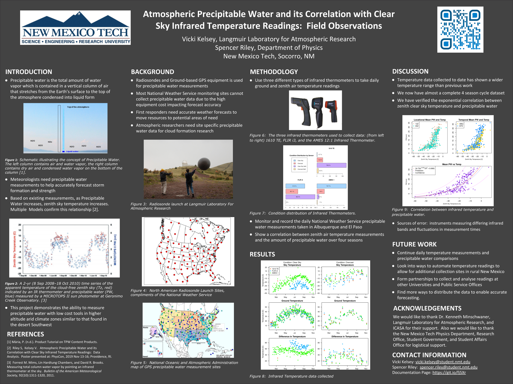
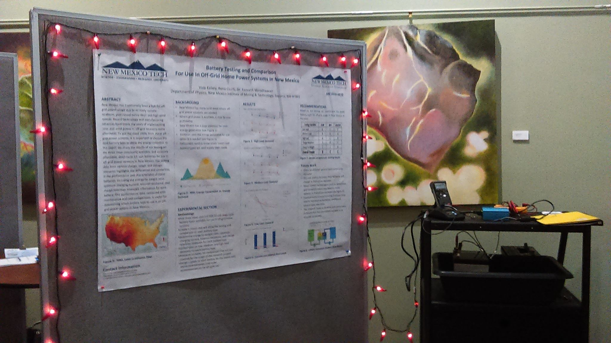

Projects arrow_upward
Precipitable Water Model
Using Infrared temperature reading to determine the amount of precipitable water in the desert south-west.
Lagrangian Atmospheric Model
Tested and troubleshooted Lagrangian Atmospheric Model designed to simulate Madden-Julian Oscillations.
Battery Testing and Comparison for Use in Off-Grid Home Powered Systems in New Mexico
Analyzing cost efficiency of battery types for sub-$700 off-grid solar systems in New Mexico.
How I paid the bills arrow_upward
Current
Lightning Research Technician
Langmuir Lab. Socorro, NMStudent Researcher
NWS/NOAA. Albuquerque, NMAtmospheric Science Graduate Teaching Assistant
South Dakota School of Mines. Rapid City, SDPrevious
Atmospheric Research Catalouger
Langmuir Lab. Socorro, NMAtmospheric Physics Research Assistant
New Mexico Tech. Socorro, NMWorked on a project to utilize a Lagrangian Atmospheric Model to forecast Madden Julian Oscillations at various sea surface temperatures.
Graduate Data Analysis Student Employee
Central New Mexico Community College. Albuquerque, NMWorked with recent graduates to get their outcomes files updated, while meeting FERPA guidelines, and updated the information which was reported to the State of New Mexico and the US Department of Education. Helped those graduates looking for employment to make sure that they were utilizing all the services available through Job Connection Services at CNM to help them find employment.
Test Wafer/Silicon Systems Engineer
Intel Corp. Leixlip, IrelandManaged silicon supply, quality control, anti-contamination procedures, and cost control for high volume manufacturing sites worldwide. Worked as part of various engineering teams and had a shared supervisory role for technicians across multiple sites and departments.
Graduate Research Assistant
Los Alamos National Lab. P-24 Plasma Physics. Los Alamos, NMWorked as part of a team on classified projects that required a high level of attention to detail and precision
Conferences arrow_upward
Atmospheric Precipitable Water and its Correlation with Clear Sky Infrared Temperature Readings
Precipitable water is primarily measured using radiosondes, ground-based global positioning systems (GPS), sun photometers, and microwave radiometry (MWRI). This limits the number of precipitable water measurement sites, which affects forecast accuracy in regards to storm formation, strength, and the potential for precipitation. Socorro, NM is among the sites that do not have the capability to measure precipitable water. Our research builds upon a previous study which determined an exponential relationship between infrared clear sky temperature measurements and precipitable water over the Gulf Coast of Texas. We are analyzing this relationship for the climate zone found in Socorro, NM. Daily ground and clear sky temperature measurements are being taken with low-cost infrared thermometers. Radiosonde precipitable water measurements from Albuquerque and Santa Teresa NWS monitoring sites are input into our dataset and analysed via our newly developed computational tool; which shows that there is a correlation ($R^2 = 0.707$) between clear sky temperature and precipitable water. Our research demonstrates the capability to measure and analyze precipitable water with low cost instrumentation in higher altitude arid climate zones similar to those found in the desert Southwest. We are building a platform to expand our tools and methods so that they can be used to determine and analyse similar correlations over a greater variety of climate zones.

Atmospheric Precipitable Water and its Correlation with Clear Sky Infrared Temperature Readings: Field Observations
Precipitable water is the total amount of water vapor which is contained in a vertical column of air that stretches from the Earth’s surface to the top of the atmosphere. It is expressed in terms of what the depth of liquid water would measure once all the water vapor in the column is compressed down into liquid form. Meteorologists currently use ground-based global positioning systems (GPS), microwave radiometers (MWRI), and radiosondes to measure precipitable water. Due to the cost and complexity of these instruments, the number of locations where these measurements are taken is limited; therefore most National Weather Service (NWS) monitoring sites do not measure precipitable water. Meteorologists need precipitable water measurements to help accurately forecast storm formation, strength, and the likelihood of precipitation. We utilize the methodology from a previous study in which relatively low-cost infrared thermometers were used to determine the precipitable water over the Gulf Coast of Texas. This approach is being tested in the climate zone found in Socorro, NM using daily ground and clear sky temperature measurements. This research demonstrates the ability to measure precipitable water with low-cost tools in higher altitude arid climate zones similar to that found in the desert Southwest.

{kind=link}
Battery Testing and Comparison for Use in Off-Grid Home Powered Systems in New Mexico
New Mexico has traditionally been a hub for off-grid power usage due to its many remote locations, year-round sunny days, and high wind speeds. Recent technology and manufacturing advances have made the costs of implementing solar and wind power in off-grid locations more affordable. To get the most utility from these off-grid power systems, it is important to choose the best battery type to store the energy collected. In this paper, we share the results of our testing on the three most commonly available, and currently affordable, deep-cycle 12- volt batteries for use in off-grid power systems in New Mexico. Our testing data from various charge, usage, and storage scenarios highlights the differences and similarities in the performance and characteristics of these batteries, including the energy-to-weight ratio, optimum charging current, internal resistance, and charge retention timescale information for each battery. This performance data, combined with maintenance and cost comparisons, is useful for determining which battery type to use in an off-grid power system in New Mexico.

{kind=link}
Educational History arrow_upward
M.S. Atmospheric and Environmental Sciences
South Dakota School of Mines and TechnologyRapid City, SD. In Progress
BSc Physics w/ Atmospheric Physics Concentration
New Mexico Institute of Mining and Technology2020
Associates Degree, Liberal Arts with emphasis in Math and Physics
Central New Mexico Community College2016
Certificate, Semiconductor Manufacturing Technology
Luna Community College1996
BA, History and French
Eastern New Mexico University1994